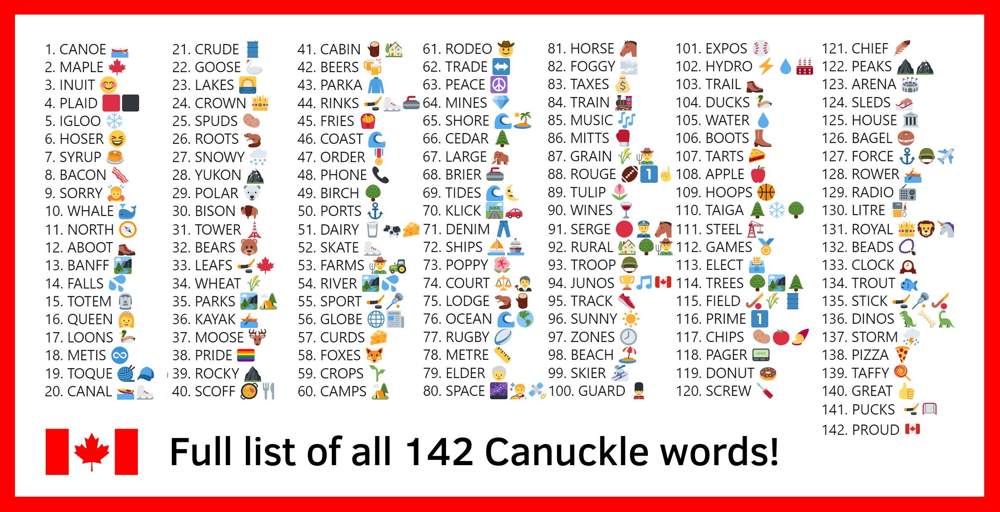

|
Thanks for playing CANUCKLE! We are proud of what we were able to create, and looking back at all the words makes us proud to be Canadian! We hope you enjoyed playing this game as much as we had creating it. We'll be adding additional stats and info to this page, but for now here's a recap of all 142 Canuckle words: |
|  (Download high resolution) |
{kind=link}
| # | WORD | FUN FACT |
| 1 | CANOE 🛶 | In Canada, the canoe has long been associated with the fur trade and the romantic figure of the voyageur. |
| 2 | MAPLE 🍁 | The maple leaf is one of the most recognizable symbols of Canada and is featured on the national flag. |
| 3 | INUIT 😊 | Inuit live throughout most of Northern Canada in the territory of Nunavut. |
| 4 | PLAID 🟥⬛️ | The official tartan for Canada as a whole is known as the Maple leaf tartan. |
| 5 | IGLOO ❄️ | Igloo comes from the Inkuktitut word “iglu” meaning house. |
| 6 | HOSER 😆 | Hoser is a slang word for a Canadian of limited intelligence. |
| 7 | SYRUP 🥞 | Canada produces 71% of the world's maple syrup, 91% of it coming from Quebec. |
| 8 | BACON 🥓 | Canadian bacon comes from the loin of the pig instead of the side or belly. |
| 9 | SORRY 🙇 | Canadians apologize so much, Canada passed the Apology Act in 2009. |
| 10 | WHALE 🐳 | There are more than 33 species of whale that live in Canada's oceans. |
| 11 | NORTH 🧭 | One of Canada's most famous nicknames is the Great White North. |
| 12 | ABOOT 🥾 | This word is a humorous (though incorrect) take on the Canadian accent saying the word “about”. |
| 13 | BANFF 🏞️ | Banff was declared a UNESCO World Heritage Site in 1984. |
| 14 | FALLS 💦 | About 28 million litres of water travel down Niagara Falls every second. |
| 15 | TOTEM 🗿 | The word totem comes from the Algonquian word “odoodem“ meaning “his kinship group“. |
| 16 | QUEEN 👸 | Queen Elizabeth II has been Canada's monarch for over 70 years. |
| 17 | LOONS 🦆 | Loons have beautiful, crimson red eyes, but this is only during mating season. |
| 18 | METIS | The Métis invented the york boat, used by the Hudson's Bay Company to carry furs and trade goods along waterways. |
| 19 | TOQUE 🧶🧢 | Toque (or tuque) is the official name for a winter hat in Canada! |
| 20 | CANAL 🚤⛸️ | The 202 km of Rideau Canal with 47 locks is the oldest, continuously operated canal system in North America. |
| 21 | CRUDE 🛢️ | Canada has the 3rd largest oil reserves in the world and is the 4th largest oil producer and exporter. |
| 22 | GOOSE 🦢 | A subspecies known as “giant” Canada geese are the largest geese in the world. |
| 23 | LAKES 🌅 | Canada has more lakes than the rest of the world combined! Almost 9% of Canada's total surface area is covered by freshwater. |
| 24 | CROWN 👑 | As of 2019, there were 47 Crown corporations in Canada, including CBC, Canada Post, VIA Rail, the Royal Canadian Mint, and the Bank of Canada. |
| 25 | SPUDS 🥔 | PEI produces more potatoes for Canada than any other province and produces 2.5 billion lbs per year! |
| 26 | ROOTS | Roots Canada opened its first store in 1973 selling footwear, and started using the beaver logo in 1985 with the launch of their athletic brand. |
| 27 | SNOWY 🌨️ | On February 10, 1999, Tahtsa Lake, British Columbia got hit with 145 cm (4'9") of snow in ONE day! |
| 28 | YUKON 🏔️ | Yukon is home to Mount Logan, Canada's tallest mountain (5959 m) and the 2nd highest peak in North America. |
| 29 | POLAR | Canada is home to about 16,000 polar bears, which is approximately two-thirds of the world's total estimated population. |
| 30 | BISON | Bison are North America's largest land animal, with bulls weighing up to 2000 lbs and cows up to 1000 lbs. |
| 31 | TOWER 🗼 | Toronto's CN Tower held the record for the world's tallest free-standing structure for 32 years, from 1975 until 2007. |
| 32 | BEARS 🐻 | Roughly half of the world's Grizzly Bears (a Brown Bear subspecies) live in Canada, mostly in BC. |
| 33 | LEAFS 🏒🍁 | One of the NHL's founding teams, the Toronto Maple Leafs have won 13 Stanley Cups, the most recent being in 1967. |
| 34 | WHEAT 🌾 | Close to half of all Canadian wheat is grown in Saskatchewan, followed by Alberta and Manitoba. |
| 35 | PARKS 🏞️🏕️ | There’s a whopping 48 National Parks and over one thousand Provincial and Territorial parks in the Great White North! |
| 36 | KAYAK 🚣 | Kayaks were originally designed for hunting and fishing. In fact, the word kayak means “hunter's boat”, and came from “qajaq” or “qayarq”, a Greenlandic Inuit word. |
| 37 | MOOSE 🦌 | The moose is the largest species of deer in the world. The average weight of a fully grown male moose (a bull) is 1500 lbs! |
| 38 | PRIDE 🏳️🌈 | Since 2016, the month of June has been declared Pride Month in Canada to celebrate the LGBTQ2+ community. |
| 39 | ROCKY ⛰️ | The Rocky Mountains, also known as the Rockies, are the largest mountain system in North America! |
| 40 | SCOFF 🥘 | Scoff is Newfoundland slang for a big feed, typically Jiggs dinner but could be any large, satisfying meal. |
| 41 | CABIN | Cabin is another name for a cottage, and Canada has no shortage of weekend getaway spots! |
| 42 | BEERS 🍻 | Canadians spent $9.2 billion on beer in 2020 ($325 per adult), which equates to 2.3 billion litres of beer. |
| 43 | PARKA | Originally created by the Inuit to keep warm in the Canadian Arctic, the first parkas were made from whale, seal or caribou skin and often coated with fish oil for waterproofing. |
| 44 | RINKS 🏒⛸️🥌 | In the 2020/21 season, there were 2,860 indoor and 5,000 outdoor ice hockey rinks located in Canada according to the International Ice Hockey Federation. |
| 45 | FRIES 🍟 | Canadians consumed over 240,000 metric tonnes of frozen fries in 2019. |
| 46 | COAST 🌊 | Canada has the longest coastline in the world, measuring 243,042 km! |
| 47 | ORDER 🎖️ | The Order of Canada is how our country honours people who make extraordinary contributions to the nation. |
| 48 | PHONE 📞 | In 1876, Scottish-born inventor Alexander Graham Bell patented the first practical telephone, a concept that he conceived in Brantford, Ontario. |
| 49 | BIRCH 🌳 | The white birch is the most widely distributed of native birch trees, and grows in every region of Canada. The bark has long been used for making canoes and ornaments. |
| 50 | PORTS ⚓️ | Canada is home to numerous ports, but the Port of Vancouver is Canada's largest port, and is the most diversified port in North America. |
| 51 | DAIRY 🥛🐄🧀 | The Dairy Farmers of Canada logo guarantees a product is made with 100% Canadian milk and milk ingredients, and is free of antibiotics. |
| 52 | SKATE ⛸️ | Skate Canada is the oldest and largest figure skating organization in the world. |
| 53 | FARMS | In 2020, roughly 1 out of every 9 Canadian jobs was in the agriculture and agri-food sector. |
| 54 | RIVER 🏞️💦 | Annually, Canada’s Rivers discharge 7% of the world’s renewable water supply at a flow rate per second more than four times that of Niagara Falls. |
| 55 | SPORT 🏒🥍 | Canada's official national sports are ice hockey (winter) and lacrosse (summer). |
| 56 | GLOBE 🌐📰 | The Globe and Mail newspaper originated from two competing newspapers, “The Globe” and “The Mail and Empire”. |
| 57 | CURDS 🧀 | Poutine (fries topped with cheese curds and gravy) is popular all over Canada and as such it is considered the country's national dish. |
| 58 | FOXES 🦊 | Four species of foxes live in Canada: arctic, swift, grey, and red being the most common. The grey fox is one of only 2 members of the dog family that can climb trees. |
| 59 | CROPS 🌱 | Canada is the world’s largest grower and exporter of flax seed, canola, oats, mustard seeds, pulses (peas, beans, and lentils) and durum wheat. |
| 60 | CAMPS 🏕️ | Over 5.7 million Canadian adults camp each year and the camping industry contributes a total of $4.7 billion annually to Canada's economy. |
| 61 | RODEO 🤠 | The Calgary Stampede, Canada's largest rodeo, is billed as “The Greatest Outdoor Show on Earth”. It is held every July and turns 110 years old in 2022. |
| 62 | TRADE | Canada’s three biggest trading partners are the United States, the European Union and China. Goods and services trade with the US totaled over $800 billion in 2021. |
| 63 | PEACE ☮️ | Canada consistently ranks in the top 10 most peaceful countries in the world according to the Global Peace Index (GPI). The Peace Tower also forms the centrepiece of the Canadian parliament buildings. |
| 64 | MINES 💎 | In 2020, Canada produced 60 minerals and metals at almost 200 mines, and the value of Canada's mineral production reached $43.8 billion. |
| 65 | SHORE 🌊🏝️ | The shores of Canada's 52,455 islands are a big part of what makes the country's coastline the longest in the world. |
| 66 | CEDAR 🌲 | Canada has the world’s largest stock of standing western redcedar trees. The western redcedar is the arboreal emblem of the province of British Columbia. |
| 67 | LARGE | With a landmass of almost 10 million square kilometres, Canada is the second-largest country in the world. |
| 68 | BRIER 🥌 | The Brier is the annual Canadian men's curling championship that has been held since 1927. Team Gushue won the 2022 Brier, their fourth championship in six years. |
| 69 | TIDES 🌊🌜 | The highest tides in the world can be found in Canada at the Bay of Fundy, which separates New Brunswick from Nova Scotia. |
| 70 | KLICK 🛣️🚗 | A klick is a military term used to denote a distance of one kilometre. It is commonly used in Canada when referring to distance or speed. |
| 71 | DENIM 👖 | The Canadian Tuxedo is an outfit consisting of a denim jacket or jean shirt worn with denim jeans, or denim-on-denim. The term originated in 1951 after Bing Crosby was refused entry to a Vancouver hotel wearing double denim. |
| 72 | SHIPS ⛵ | The most famous ship in Canadian history, the Bluenose, was both a fishing and racing vessel in the 1920s and 1930s. The Nova Scotia schooner achieved immortality when its image was engraved onto the Canadian dime. |
| 73 | POPPY 🌺 | From the last Friday in October to Remembrance Day, millions of Canadians wear a poppy as a visual pledge to never forget those who sacrificed for our freedom. |
| 74 | COURT | The Supreme Court of Canada is the highest court in the judicial system of Canada. It comprises nine justices, whose decisions are the ultimate application of Canadian law. |
| 75 | LODGE | A beaver home is called a lodge. Beavers live in wetland habitats along lakes and rivers and are some of the best architects in the wild. Some even call them the original Canadian lumberjacks! |
| 76 | OCEAN 🌊🌎 | With marine waters spanning its west, north, and east coasts, Canada is an ocean nation. Canadians are influenced in many ways by the Pacific, Arctic, and Atlantic Oceans. Celebrate World Oceans Day on June 8th! |
| 77 | RUGBY 🏉 | Buoyed by its inclusion in the 2016 Olympic Games, Rugby is one of the fastest growing team sports in Canada, particularly in youth and women. |
| 78 | METRE 📏 | Canada officially uses the metric system of measurement, and metre is the standard spelling of the metric unit for length. |
| 79 | ELDER 🧓 | Elders are respected individuals who play key roles in Indigenous communities. They are important knowledge keepers, and they also help to ensure cultural continuity. |
| 80 | SPACE | Canada's contributions to space exploration include one of Canada’s most celebrated and iconic technological advances: The Canadarm - a remote-controlled robotic arm used to help build and maintain the International Space Station (ISS). |
| 81 | HORSE 🐴 | On April 30, 2002, a bill was passed into law by the Canadian Government making the Canadian horse an official symbol of Canada. The Canadian horse is known for its great strength and endurance, resilience, intelligence and good temper. |
| 82 | FOGGY 🌫️ | Newfoundland, Canada is widely considered one of the foggiest places on Earth. On average, Newfoundland experiences over 200 foggy days every year. |
| 83 | TAXES 💰 | Lottery & gambling winnings in Canada are treated as windfalls and are not subject to Canadian income tax. Turns out taxes aren't always certain after all! |
| 84 | TRAIN 🚂 | Canada has a large and well-developed railway system that includes transcontinental freight train services by Canadian National (CN) and Canadian Pacific (CP), and nationwide passenger train services by Via Rail. |
| 85 | MUSIC 🎵 | The Canadian music industry is the sixth-largest in the world, producing internationally renowned composers, musicians and ensembles. O Canada! |
| 86 | MITTS 🥊 | Celebrated annually on November 21st, National Red Mitten Day encourages Canadians to display their patriotism in support of Canadian athletes! Red mittens represent the pride, generosity, and excellence of every Canadian. |
| 87 | GRAIN | The grain sector is a key driver of Canada's economic growth, exporting 26.4 million tonnes of wheat in 2020-21 and over $25 billion in exports sales. |
| 88 | ROUGE | In the Canadian Football League (CFL), a rouge is a one-point score that is awarded for certain plays that involve the ball being kicked into the end zone. The rouge is uniquely Canadian! |
| 89 | TULIP 🌷 | The Canadian Tulip Festival in Ottawa features 100 tulip varieties with more than one million blooms over 14,000 m². The celebration is a symbol of friendship between Canada and the Netherlands, with 20,000 bulbs being gifted by the Netherlands each year. |
| 90 | WINES 🍷 | Canadians drink more than 1 billion glasses of Canadian wine every year. Because of our cold climate, Canada is the largest Icewine producer in the world. |
| 91 | SERGE | The Royal Canadian Mounted Police, or “Mounties,” are known for their iconic uniforms that feature the iconic scarlet tunic called a red serge. |
| 92 | RURAL | The Prairie provinces of Alberta, Saskatchewan, and Manitoba are known for being the most rural parts of Canada. Much of the Prairies' population is descended from 19th century farmer-settlers. The percentage of Canadians living in rural areas has gone from 87% in 1851 to 17.8% in 2021. |
| 93 | TROOP | The Canadian Armed Forces has personnel deployed across Canada and around the world. Since 1947, Canadian troops have completed 72 international missions. |
| 94 | JUNOS | The Juno Awards celebrate the best in Canadian music! Anne Murray has won the most Junos with 25 wins (52 nominations), followed by Bryan Adams (21 wins, 63 nominations) and Celine Dion (20 wins, 75 nominations). |
| 95 | TRACK | Canada's best summer Olympic sport is athletics, which includes running, hurdles, long jump, high jump, decathlon and other track & field events. Canada has earned 66 medals in athletics since 1900, including 16 gold, 17 silver and 33 bronze. |
| 96 | SUNNY ☀️ | Canada’s North is particularly well-known as being the fabled “land of the midnight sun.” Due to its proximity to the Arctic Circle, northern days can entail up to 24 straight hours of sunlight in the summer. Calgary is the sunniest of Canada's large cities, enjoying an average of 2,400 hours of bright sun each year, spread over 333 days. |
| 97 | ZONES 🕗 | There are six time zones in Canada covering four and a half hours. From west to east these time zones are: Pacific, Mountain, Central, Eastern, Atlantic and Newfoundland. Canada's Sir Sandford Fleming developed the modern system of standard time and time zones, still in use today. |
| 98 | BEACH 🏖️ | Canada is home to the two longest freshwater beaches in the world: Wasaga Beach (14 km) on the Georgian Bay in Ontario and Sauble Beach (11 km) on the Bruce Peninsula, along the eastern shore of Lake Huron. |
| 99 | SKIER ⛷️ | Approximately 275 Canadian ski areas see more than 19 million visits per season. Canadian skiers and snowboarders (an estimated number of 2.5 million) are on the slopes and trails an average of 7.5 days per year. |
| 100 | GUARD 💂 | The Ceremonial Guard is an ad hoc military unit in the Canadian Armed Forces that performs the Changing the Guard ceremony on Parliament Hill and posts sentries at Rideau Hall. We stand on guard for thee! |
| 101 | EXPOS ⚾️ | The Montreal Expos, named after the Expo 67 World's Fair, were the first Major League Baseball franchise located outside the USA, competing from 1969 until 2004. The last World's Fair held in Canada was Expo 86 in Vancouver. |
| 102 | HYDRO ⚡️💧🏭 | Waterpower is Canada's most abundant source of clean and renewable electricity, providing more than 60% of Canada's total electricity today. Canada is the fourth largest generator of hydroelectricity in the world. |
| 103 | TRAIL 🥾 | The Trans Canada Trail is Canada’s national trail and is the longest network of multi-use recreational trails in the world. Crossing Canada on the Trans Canada Trail by foot would take over two years, spanning a whopping 24,134 km! |
| 104 | DUCKS 🦆 | With roughly 22 different species of duck found in Canada, the most common is the Mallard. Saskatchewan is renowned for having some of the most abundant and productive waterfowl habitat in North America. Check out Ducks Unlimited Canada and how they are working to conserve, restore and manage Canadian wetlands. |
| 105 | WATER 💧 | With around 80,423 cubic metres per capita, Canada has about 9% of the world's total renewable fresh water supply. When glacier, underground and lake water is included, Canada actually has 20% of the world's fresh water supply. |
| 106 | BOOTS 👢 | Rain boots, winter boots, cowboy boots, hiking boots, ski/snowboard/snowmobile boots - there is no shortage of boots for Canadians to wear! DYK: The brown leather riding boots worn by the RCMP need to be shined for a minimum of 25 hours before they have the appropriate sheen to them! |
| 107 | TARTS 🥧 | A butter tart is a delicious pastry tart, which generally consists of butter, sugar, syrup, and egg, filled into a flaky pastry. The earliest published recipe for a butter tart is from Barrie, Ontario dating back to 1900 in the Women's Auxiliary of the Royal Victoria Hospital Cookbook. |
| 108 | APPLE 🍎 | The McIntosh (nicknamed the “Mac”) is the national apple of Canada. John McIntosh discovered the original McIntosh sapling on his Dundela farm in Upper Canada in 1811. Many years later, Apple Inc. named the Macintosh computer line after the fruit. |
| 109 | HOOPS 🏀 | Invented by Canadian James Naismith in 1891 while he was teaching at the YMCA in Springfield, Massachusetts, basketball is now one of the most popular sports in the world. The first game used a soccer ball and peach baskets as hoops, which gave the sport its name. Basketball was born! |
| 110 | TAIGA 🌲❄️🌳 | The taiga or boreal forest has been called the world's largest land biome. In North America the taiga occupies much of Canada and Alaska. At 1.3 billion acres, the Canadian Boreal Forest is one of the largest intact forest and wetland ecosystems remaining on earth. |
| 111 | STEEL 🏗️ | Steel plays an extremely important role in the Canadian economy as a whole: in 2019, the Canadian steel industry contributed $4.2 billion to Canada's GDP. According to the Canadian Steel Producers Association, the Canadian steel industry employs, directly and indirectly, more than 120,000 Canadians. |
| 112 | GAMES 🏅 | The Canada Games is a multi-sport event held every two years, alternating between the Canada Winter Games and the Canada Summer Games. They represent the highest level of national competition for Canadian athletes. The Niagara 2022 Canada Summer Games will take place Aug 6-21, 2022! |
| 113 | ELECT 🗳️ | Canada is a representative democracy. During an election, all Canadian citizens who are at least 18 years old on election day can vote in their electoral district. |
| 114 | TREES 🌳🏞️🌲 | One of the most widely-known facts about Canada is that we’ve got an abundance of trees, but did you know that Canada actually boasts 30 per cent of the world’s boreal forest and 10 per cent of the world’s total forest cover? |
| 115 | FIELD 🏑🌾🛢️ | There are so many different types of fields in Canada: sports fields, wheat fields, oil fields, and ice fields to name a few. The Canadian Prairies are known for their open skies and vast fields of grain, but Canada is also home to the world's largest non-polar ice field in the St. Elias Mountains located in Kluane National Park and Reserve, Yukon Territory. |
| 116 | PRIME | The Prime Minister (PM) is the head of the federal government in Canada. It is the most powerful position in Canadian politics. While the Queen may be Canada's head of state, and the Governor General the Queen's representative, it's the Prime Minister who is known as the nation's head of government. |
| 117 | CHIPS 🥔🍅🍠 | Canadians love their potato chips! In 2020, the Canadian potato chips market had total revenues of almost $2 billion. Canada is also home to some truly Canadian original flavours - both Ketchup and All Dressed chips are almost exclusively available in Canada! |
| 118 | PAGER 📟 | The telephone pager was invented in 1949 by Canadian Alfred J. Gross, a Toronto-based wireless communications pioneer. The devices Alfred invented also led to cordless and cellular telephone technology. |
| 119 | DONUT 🍩 | Canada has the most donut shops and consumes the most donuts per capita of any other country in the world - around 1 billion annually! The donut-eating capital of Canada is Lloydminster, Alberta/Saskatchewan. National Donut Day was last Friday, June 3rd - we hope you celebrated with your favourite donut! In Canada, the preferred spelling is “doughnut”, but most dictionaries list “donut” as an acceptable variant. We wanted to include it in the game since the doughnut/donut is considered by some as Canada's unofficial national sugary snack! 🍩🍁" |
| 120 | SCREW | In 1907, Canadian Peter L. Robertson invented a square socket-head screw. He produced his screws in his Milton, Ontario, factory starting in 1908. At that time, it was a revolutionary change in the fastener industry. Robertson screws and screwdrivers carry his name to this day. |
| 121 | CHIEF | In many Indigenous cultures in Canada, chiefs are the leaders of bands, clans and/or First Nations. Chiefs act as cultural and spiritual leaders and also serve as links between their people and the municipal, provincial and federal governments. RoseAnne Archibald is the current National Chief of the Assembly of First Nations (AFN) in Canada. |
| 122 | PEAKS | Canada’s Yukon Territory is home to 8 of Canada’s tallest mountains, with Mount Logan topping them all at 5956m high. BC’s Snow Dome peak is a unique “three-ocean peak”, where if you poured a cup of water at the summit, the water could flow into the Pacific Ocean to the west, the Arctic Ocean to the north, or the Atlantic Ocean to the east. |
| 123 | ARENA | The largest indoor arena in Canada is the Montreal Canadiens’ Bell Centre with a capacity of 21,700. The largest open air stadium is Edmonton’s Commonwealth Stadium, home to CFL’s Edmonton Elks, able to hold 56,302. |
| 124 | SLEDS 🛷 | “Toboggan” is from the Mi'kmaq word “tobakun,” which means sled. In fact, the Inuit made the first toboggans out of whale bone and used it to transport people and belongings across the snowy tundra. Guy Martin holds the world record for fastest speed on a gravity powered snow sled at over 134 km/h in 2014! |
| 125 | HOUSE 🏛️ | The House of Commons of Canada is a democratically elected body whose members are known as members of Parliament (MPs). It is the lower house of the Parliament of Canada (the Senate is the upper house) and provides a link between Canadians and their Parliament. Many laws in Canada first begin as bills in the House of Commons. |
| 126 | BAGEL 🥯 | The Montréal bagel is one of Canada's most iconic and coveted snacks. It is a distinctive variety of handmade bagel that traditionally has a prounounced sweet taste and a chewy and dense texture, and is always baked in a wood-fired oven. The bagel first arrived in Montréal with the wave of Jewish immigrants from Eastern Europe in the early 1900s. |
| 127 | FORCE | The Canadian Armed Forces is the unified military of Canada, including sea, land, and air elements referred to as the Royal Canadian Navy, Canadian Army, and Royal Canadian Air Force. June 5th was Canadian Armed Forces Day - a day to honour and recognize members of the Canadian Armed Forces who display unwavering courage, sacrifice, and selflessness every day they wear the uniform. |
| 128 | ROWER | A total of 43 Olympic medals (including 10 gold medals) have been won by Canadian rowers, making rowing Canada's third-most successful summer Olympic sport (behind athletics and swimming). |
| 129 | RADIO 📻 | Canadian inventor Reginald A. Fessenden is best known for his pioneering work developing radio technology, including the foundations of amplitude modulation (AM) radio. On 23 December 1900, he was the first person to send audio (wireless telephony) by means of electromagnetic waves, successfully transmitting speech by radio over a distance of about a 1.6 kilometres. |
| 130 | LITRE ⛽ | Canada officially uses the metric system of measurement, and litre is the standard spelling of the metric unit for liquid volume. Canadians purchase gasoline in litres, and also buy milk by the litre (in bags in parts of Ontario, Quebec, and the Maritimes!). |
| 131 | ROYAL 👑🦁🦄 | Canada is one of the oldest continuing monarchies in the world. The title “Royal” is a sign of honour and distinction, and the granting of this distinction is a prerogative of the Sovereign. In Canada, we have the Royal Canadian Navy, the Royal Canadian Air Force, the Royal Canadian Regiment in the Canadian Army, the Royal Canadian Mounted Police, the Royal Canadian Legion, the Royal College of Physicians and Surgeons of Canada, and the Royal Architectural Institute of Canada. In Canada's legislative process, a bill can only become law once it has received royal assent. |
| 132 | BEADS 📿 | Beading has a very long artistic and cultural history among the Indigenous people in Canada. At least 8,000 years before Europeans came to Canada, First Nations people were using beads in elaborate designs and for trade. Today, you can find beautiful First Nations beadwork at powwows, First Nations arts stores and museums across Canada. June 21st is National Indigenous Peoples Day. Take the opportunity to learn more about the cultural and linguistic diversity as well as the contributions of First Nations, Inuit and Métis Peoples. |
| 133 | CLOCK 🕰️ | The first quartz clock was developed in 1927 by Canadian-born telecommunications engineer Warren Marrison. During the 1940s, time standard laboratories throughout the world switched from mechanical clocks to quartz, and the quartz revolution had begun thanks to Marrison. |
| 134 | TROUT 🐟 | With freshwater lakes, rivers and streams covering almost 9% of the country's total area, Canada is a haven for anglers. Canada is home to many different species of trout, including steelhead, rainbow trout, lake trout, brown trout, cutthroat trout and brook trout. Approximately 25% of the world's lake trout lakes are found in the province of Ontario. |
| 135 | STICK 🏒🥍🏑 | Hockey and Canada are synonymous with each other, and the sport remains integral to the country’s culture. Hockey sticks go back to the 1800’s where sticks were hand carved from a single piece of wood. The first commercial sticks were said to be created by the Mi’kmaq carvers in Nova Scotia and were made from birch and hornbeam trees. |
| 136 | DINOS 🦖🦴🦕 | Alberta is home to the richest source of dinosaur fossils in the world! The town of Drumheller in the heart of the Canadian Badlands is known as the “Dinosaur Capital of the World” and boasts the world's largest dinosaur, a T-Rex standing 25m tall. Just down the road in the Red Deer River valley you'll find Dinosaur Provincial Park, a UNESCO World Heritage site where 58 unique dinosaur species have been discovered. |
| 137 | STORM ⛈️ | Canada is as tall as it is wide, creating a wide range of climate conditions. From blistering cold winters to hot muggy summers; torrential rain, blinding snowstorms, deadly tornadoes and scorching drought, Canadians experience some of the planet's most diverse weather systems. Windsor, Ontario is the thunderstorm capital of Canada and has more lightning strikes than any other major city across the country. |
| 138 | PIZZA 🍕 | Pizza is one of the most popular foods in the world, and Canada is no exception. There is even “Canadian pizza” which typically includes tomato sauce, mozzarella cheese, bacon, pepperoni, and mushrooms. The country's biggest claim to pizza fame, however, is that the Hawaiian pizza was invented in Canada in 1962 by Sam Panopoulos, a native of Greece who was running a pizzeria in Chatham, Ontario. Pineapple pizza fans unite! 🍍🥓🍕 |
| 139 | TAFFY 🍭 | Maple taffy (tire d'érable or tire sur la neige in French-speaking Canada) is a sugar candy made by boiling maple sap past the point where it would form maple syrup, but not so long that it becomes maple butter or maple sugar. It is part of traditional culture in Québec, Eastern Ontario, New Brunswick, and Nova Scotia. In these regions, maple syrup is boiled, poured into rows on a snow-lined tray, and rolled onto sticks to make this chewy, irresistible candy. |
| 140 | GREAT 👍 | Although it is unknown who coined the term “Great White North” in reference to Canada, the nickname has been in use for many decades. “Great” because it’s the second largest country in the world. “White” because of the amount of Arctic frozen tundra and snow within the country. Finally, “North” because not only does Canada take up most of the northern half of North America, it also stretches nearly to the North Pole! Canada is also home to the Great Lakes, the largest group of freshwater lakes on Earth, as well as Great Bear Lake and Great Slave Lake in the Northwest Territories. |
| 141 | PUCKS 🏒🥅 | According to legend, the first hockey pucks used in early outdoor hockey games were pieces of frozen cow dung. Other early versions were made out of wood cut from the branches of trees. Sometimes even stones would suffice. Around 1875, rubber lacrosse balls were sliced in thirds and only the middle section was kept. Eventually, vulcanized rubber became the standard material used for hockey pucks. |
| 142 | PROUD | There is little doubt that Canada is one of the best places to live in the world, and there is a lot to be proud of in this amazing country! A few of the things that make us proud to call the Great White North home: universal health care, a rich ethnic diversity & inclusive culture, gorgeous scenery & landscapes, extraordinary wildlife, delicious food like poutine, butter tarts and maple syrup, real beer, and of course Canada's game, hockey! We feel a deep sense of pride towards this beautiful land and its inhabitants, and can proudly wear the maple leaf wherever we go. True north strong and free! 🍁 |